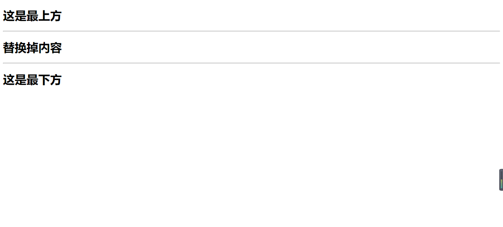
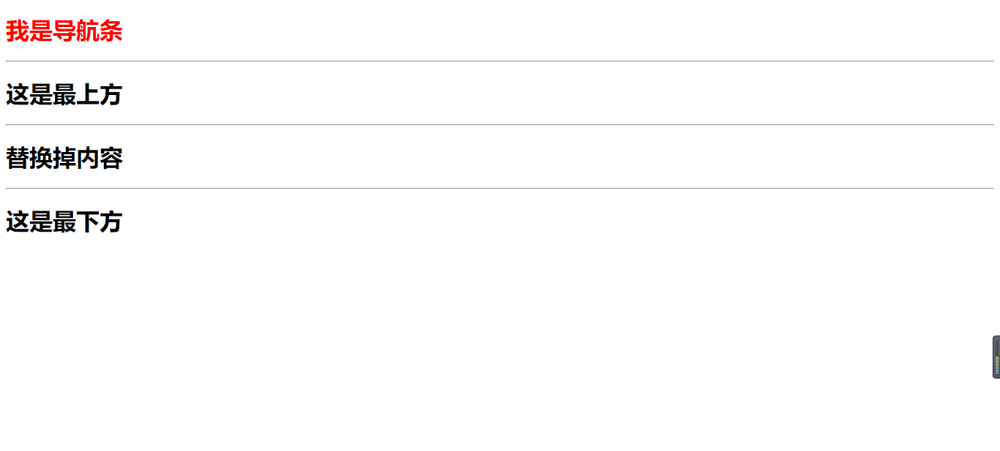

如果我们在开发一个网站的过程中，可能发现网站中除了部分内容不一样外，绝大部分内容都是一致的。如果每个页面我们都去一个一个写的话，那样的工作量就太大了。所以我们要学会使用母版和继承。
首先，写一个母版，命名base.html，他代表网站中公共的部分。关键部分在13-15行。
1 <!DOCTYPE html>
2 <html lang="en">
3 <head>
4 <meta charset="UTF-8">
5 <title>母版</title>
6 </head>
7 <body>
8 <p>
9 <h1>这是最上方</h1>
10 <hr>
11 </p>
12 <P>
13 {% block page-main %}
14 {# 母版中被替换的地方 #}
15 {% endblock %}
16 <hr>
17 </P>
18 <P>
19 <h1>这是最下方</h1>
20 </P>
21 </body>
22 </html>接着，新建一个替换内容base_list.html。关键部分在第2行，以及5-7行。
1 {# 继承母版 #}
2 {% extends 'base.html' %}
3
4 {# 把自己页面的内容塞到母版相应的位置 #}
5 {% block page-main %}
6 <h1>替换掉内容</h1>
7 {% endblock %}效果展示图：

母版和继承不仅仅可以对html页面内容进行替换，还可以对js和css进行替换。
一般来说，每个网站都有一个公共的导航栏，这些导航栏都是母版里面的，但是有的页面没有继承母版，却也需要导航栏怎么办呢？这就需要使用组件了。也就是说我们把导航栏单独写成一个html页面，然后使用include包含它就OK了。
创建一个html页面，命名daohangtiao.html：
1 <!DOCTYPE html>
2 <html lang="en">
3 <head>
4 <meta charset="UTF-8">
5 <title>导航条</title>
6 </head>
7 <body>
8 <h1 style="color: red">我是导航条</h1>
9 <hr>
10 </body>
11 </html>然后在需要添加导航条的页面，找一个相应的位置添加代码：
{% include 'daohangtiao.html' %}效果图：
